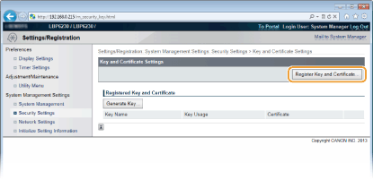
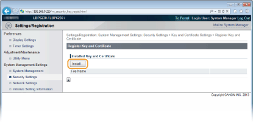
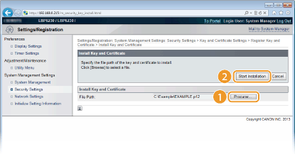
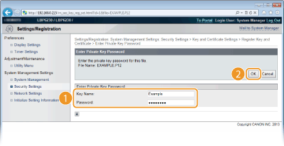
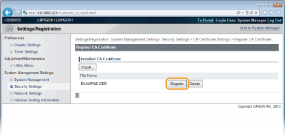

0KU8-033
Os pares de chave e certificados digitais podem ser obtidos de uma autoridade certificadora (CA) para serem usados com a impressora. Após obtê-los de uma CA, você pode instalar e registrar os arquivos de pares de chave e certificado CA na impressora usando o Remote UI. Verifique se o pare de chaves e certificado satisfazem as exigências da impressora (Exigências operacionais de chave e certificado). É possível registrar até três pares de chave e três certificados CA, incluindo os pré-instalados.

1
Inicie o Remote UI e faça o logon no modo Administrador Sistema. Iniciando o Remote UI
2
Clique em [Settings/Registration].

3
Clique [Security Settings]  Clique [Key and Certificate Settings] ou [CA Certificate Settings].
Clique [Key and Certificate Settings] ou [CA Certificate Settings].
Clique [Key and Certificate Settings] para instalar um par de chaves ou [CA Certificate Settings] para instalar um certificado CA.

4
Clique [Register Key and Certificate] ou [Register CA Certificate].


Para excluir um par de chaves registrado ou certificado CA
No lado direito do par de chaves ou certificado CA que deseja excluir, clique [Delete] [OK].
Um par de chaves não pode ser excluído quando "SSL" é exibido sob [Key Usage], indicando que o par de chaves está em uso. Neste caso, desative o SSL ou substitua o par de chaves por outro. Depois, você poderá excluir o par de chaves inicial.
5
Clique em [Install].
É possível instalar um arquivo nesta impressora. Se já houver um outro arquivo instalado, clique [Delete] [OK] para excluir o arquivo anteriormente instalado.

6
Clique em [Browse], especifique o arquivo para instalar e clique em [Start Installation].

 |
O par de chaves ou o certificado CA do computador é instalado na impressora.
|
7
Registre o par de chaves ou o certificado CA.
 Registrando um par de chaves.
Registrando um par de chaves.|
1
|
Clique [Register] ou o par de chaves correto que deseja registrar.
 |
|
2
|
Insira o nome do par de chaves e senha e, em seguida, clique em [OK].
 [Key Name]
Digite um nome de até 24 caracteres alfanuméricos para registrar o par de chaves. Defina um nome que você encontrará facilmente em uma lista em um momento posterior.
[Password]
Digite até 24 caracteres alfanuméricos para a senha da chave secreta que está definido no arquivo a ser registrado.
|
Registrando um certificado CAClique em [Register] à direita do certificado CA que você deseja registrar.
